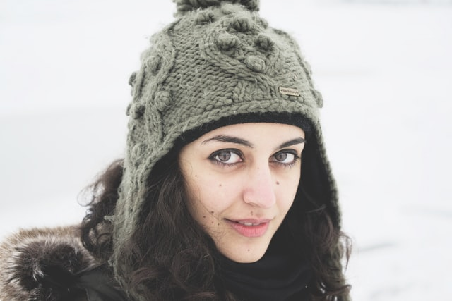
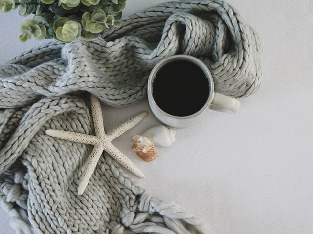
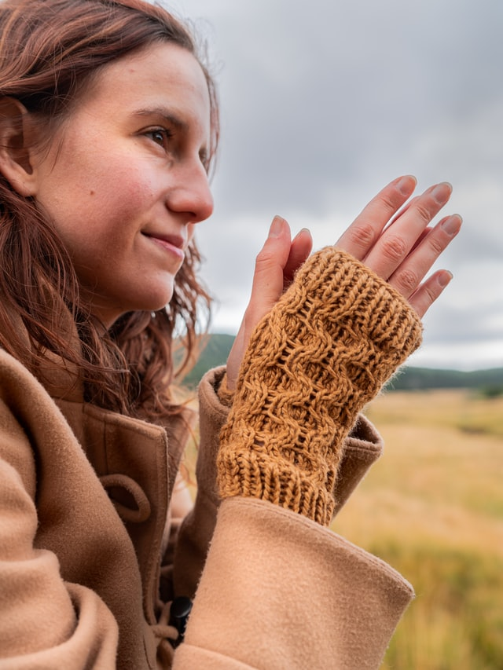
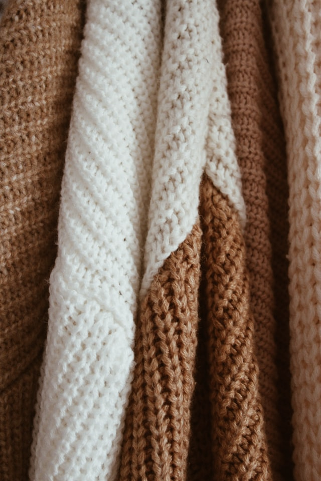

Nos produits les plus populaires
Chapeaux
Photo de DAVIDCOHEN sur Unsplash
- Tuques, bérets, bonnets, etc.
- Utilisant des points variés: point mousse, jersey, de riz, torsades, côtes, nopes, jacquard, etc.
- Pour enfants et adultes.
- Fabriqués avec de la laine d'acrylique ou de mouton.
- Prix à partir de 15$ (modèles enfants) et 30$ (modèles adultes).
Foulards
Photo de Debby Hudson sur Unsplash
- Foulards, châles, cols, etc. Tout pour garder son cou au chaud.
- Utilisant des points variés: point mousse, jersey, de riz, torsades, côtes, jacquard, etc.
- Pour enfants et adultes.
- Fabriqués avec de la laine d'acrylique ou de mouton.
- Prix à partir de 20$ (modèles enfants) et 35$ (modèles adultes).
Mitaines
Photo de Les Triconautes sur Unsplash
- Mitaines, gants, gantelets, etc. Tout pour garder ses mains au chaud.
- Utilisant des points variés.
- Pour enfants et adultes.
- Fabriqués avec de la laine d'acrylique ou de mouton.
- Prix à partir de 10$ (modèles enfants) et 20$ (modèles adultes).
Chandails/Pulls

Photo de Jordan Bigelow sur Unsplash
- Chandails à manches longues, à manche courtes, vestes, gilets, etc.
- Pour femmes, hommes et enfants.
- Pour toutes les tailes: nos tailles adultes vont de très petit à très-très-très-très-grand.
- Utilisant des points variés: point mousse, jersey, torsades, dentelle, jacquard, etc.
- Fabriqués aved de la laine de coton, de mouton, d'acrylique ou de mélanges de fils.
- Prix à partir de 40$ (modèles enfants) et 60$ (modèles adultes).
Accessoires pour la maison
Photo de Tanya Trukyr sur Unsplash
- Couvertes, coussins, paniers, etc.
- Fabriqués avec de la laine d'acrylique, de mouton, de coton, et des mélanges.
- Prix variant selon le type de produit.